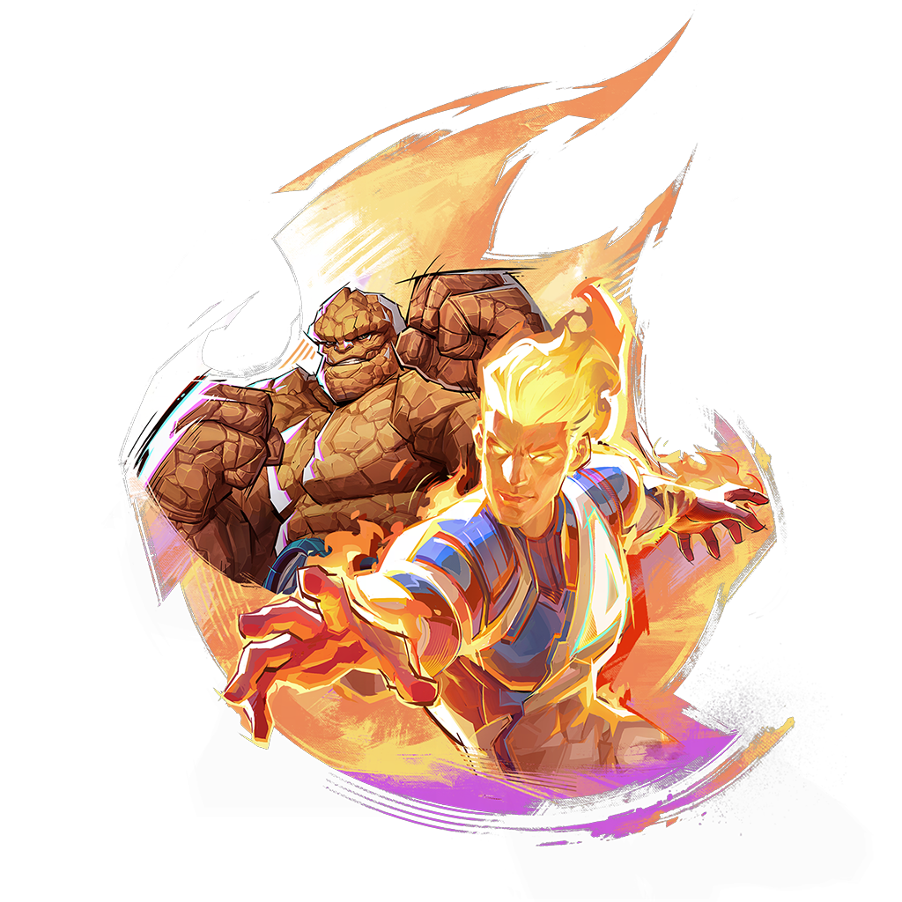

February 21, 2025
Dear Rivals,
When Human Torch and the Thing officially join the battlefield, the Fantastic Four family successfully assembles in New York! In the eternal darkness, the heroes are never afraid. The highly anticipated second half of Season 1 of Marvel Rivals is arrived, the Fantastic Four is unite and stand against the vampiric threat to save the city.
Prepare yourself for the challenges ahead by learning from your favorite streamers and earning fantastic drop rewards.
Feb 21st 12:00 PM - Mar 6th 23:59, UTC 0
Watch 30 mins: 「TWO-IN-ONE」Spray
Watch 2 hour: Hela「Great Galaxy」EMOTES
Be sure to follow these steps to make sure you're set up to earn Drops:
Twitch Drops are exclusive rewards for Rivals who tune in to Marvel Rivals Twitch streams. To learn more about ongoing Marvel Rivals Drops, check here.
During the event period, watch streams under the "Marvel Rivals" category to participate in the event. You can confirm all information about the event and rewards here.
Streams with Drops enabled will have the "Drops Enabled" tag for the broadcast. Additionally, a pop-up will display in Twitch Chat if the streamer has enabled Drops.
You can check your progress towards Drops any time by viewing the Drops Inventory page. If it's not processing, contact Twitch Support or visit the Twitch Viewer FAQ page.
Check your Twitch Drop Inventory page, and redeem the rewards before they expire.
Check your in-game email, The emails will expire in 30 days, claim it as soon as possible.
No, you will only be eligible to receive a drop for one active channel at a time. Watching more than one channel simultaneously will not result in more drops.
For more information, please stay tuned to our official social media or news.
Please provide feedback by contacting Marvel Rivals Support#4674 on our official Discord.